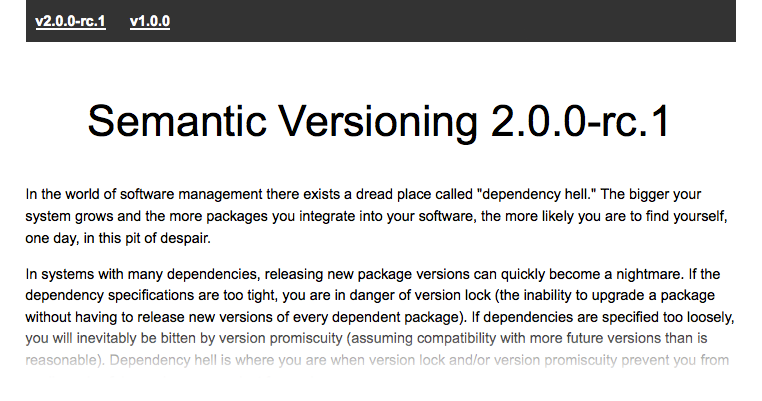
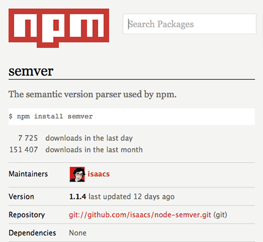
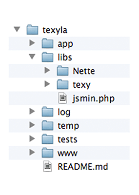
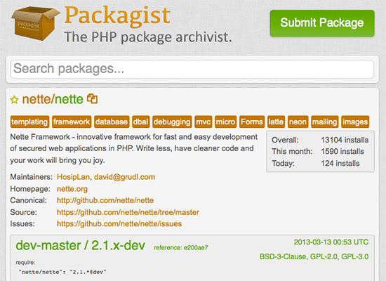
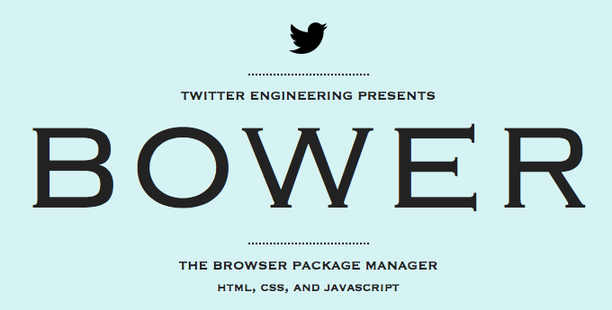
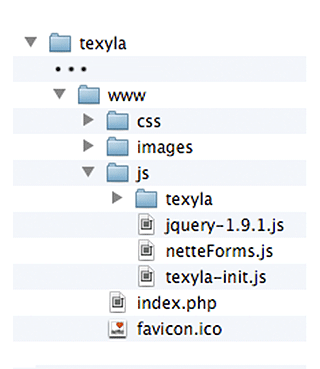
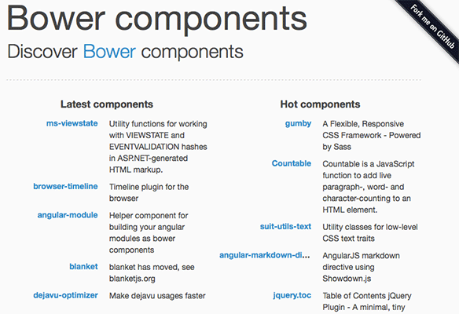

Moderny devstack webdevelopera
predstavenie Composer, Bower a Grunt.js
Najskor vsak… Semanticke verzovanie
 http://semver.orgSemanticke verzovanie
<MAJOR>.<MINOR>.<PATCH>
0.0.1
0.4.2
1.2.3
1.2.3
v0.0.1
0.4.2-rc1
1.2.3-1
1.2.3-1
Ako semanticky verzovat?
Initial release:
downloader-0.0.1
Initial release:
downloader-1.0.0
fix:
downloader-1.0.1
new feature:
downloader-1.1.0
fix:
downloader-1.1.1
API change:
downloader-2.0.0
Porovnanie verzii
2.3.4 > 1.3.4
2.3.4 > 2.2.4
2.3.4 > 2.3.3
2.3.4-0 > 2.3.4
2.3.4-10 > 2.3.4-9
2.3.4 > 2.3.4-beta
2.3.4-beta > 2.3.4-alpha
Rozsahy verzii
>1.2.3
<1.2.3
1.2.3 - 2.3.4>=1.2.3 <=2.3.4
1.2.x>=1.2.0 <1.3.0
1.x>=1.0.0 <2.0.0
~1.2.3>=1.2.3 <1.3.0
~1.2>=1.2.0 <1.3.0
~1>=1.0.0 <2.0.0
NPM balicek semver
 https://npmjs.org/package/semverhttp://getcomposer.org/
kazdy projekt potrebuje nejake libky
zapojte Composer
curl -sS https://getcomposer.org/installer | php -- --install-dir=~/binv roote projektu vytvorte subor composer.json
{
"require": {
"php" : ">=5.3.2",
"nette/nette" : "dev-master",
"dg/texy" : "~2.2.0",
"JanMarek/WebLoader" : "dev-jm-nette-extension"
},
"config": {
"vendor-dir": "libs"
}
} v roote projektu spustite prikaz composer install
zapojte Composer
app/bootstrap.php
<?php
require __DIR__ . '/../libs/autoload.php';
$configurator = new Nette\Config\Configurator();
... repozitar pre Composer
 https://packagist.org/balicek pre Composer
composer.json
{
"name": "johndoe/downloader",
"type": "utility",
"description": "...",
"homepage": "http://downloader.johndoe.org",
"license": ["BSD-3-Clause", "MIT"],
"authors": [ { "name":"John Doe" }, ... ],
"require": {
"php": ">=5.3.0",
"ext-tokenizer": "*",
"nette/nette": "~2.0.5"
},
"require-dev": {
"phpunit/phpunit": "3.7.x"
},
"autoload": {
"psr-0": "Johndoe\\Downloader\\": "src/"
}
} 
http://twitter.github.com/bower/kazdy projekt potrebuje nejake libky
zapojte Bower
npm install -g bowerv roote projektu vytvorte subor component.json
v roote projektu vytvorte subor .bowerrc
v roote projektu vytvorte subor bower.json
v roote projektu spustite prikaz bower install
zapojte Bower
.bowerrc
{
"directory": "www/vendor",
"json": "bower.json"
} bower.json
{
"dependencies": {
"bootstrap": "git://github.com/srigi/html-bootstrap-assets.git#~2.2.2",
"jquery": "~1.9"
}
} repozitar pre Bower
 http://sindresorhus.com/bower-components/balicek pre Bower
component.json
{
"name": "bootstrap",
"version": "2.3.1",
"main": [
"./docs/assets/js/bootstrap.js",
"./docs/assets/css/bootstrap.css"
],
"dependencies": {
"jquery": "~1.8.0"
}
} bower register <name> <url>http://gruntjs.com/
zapojte Grunt.js
npm install -g grunt-cliv roote projektu vytvorte subor package.json
v roote projektu vytvorte subor Gruntfile.js
v roote projektu spustite prikaz npm install
v roote projektu spustite prikaz grunt
zapojte Grunt.js
package.json
{
"engines": {
"node": ">= 0.8"
},
"devDependencies": {
"grunt": "~0.4",
"grunt-contrib-clean" : "~0.4.0",
"grunt-contrib-concat" : "~0.1.2",
"grunt-contrib-copy" : "~0.4.0",
"grunt-contrib-jshint" : "~0.1.1",
"grunt-contrib-livereload" : "~0.1.0",
"grunt-contrib-uglify" : "~0.1.1",
"grunt-contrib-watch" : "~0.2.0",
"grunt-targethtml": "git://github.com/srigi/grunt-targethtml.git"
}
} npm installzapojte Grunt.js
Gruntfile.js
module.exports = function(grunt) {
grunt.loadNpmTasks('grunt-contrib-clean');
grunt.loadNpmTasks('grunt-contrib-concat');
grunt.loadNpmTasks('grunt-contrib-copy');
grunt.loadNpmTasks('grunt-contrib-jshint');
grunt.loadNpmTasks('grunt-contrib-livereload');
grunt.loadNpmTasks('grunt-contrib-uglify');
grunt.loadNpmTasks('grunt-contrib-watch');
grunt.loadNpmTasks('grunt-targethtml');
grunt.initConfig({
// TODO tasks
});
grunt.registerTask('default', ['jshint', 'livereload', 'watch']);
grunt.registerTask('release', ['jshint', 'clean', 'concat:js', 'uglify', 'copy']);
} zapojte Grunt.js - devel
// TODO tasks
jshint: {
jshintrc: ".jshintrc",
files: {
src: ["www/js/**/*.js"]
}
} {
"curly": true,
"eqnull": true,
"eqeqeq": true,
"undef": true,
"globals": {
"jQuery": true
}
} watch: {
js: {
files: '<%= jshint.files.src %>',
tasks: ['jshint', 'livereload']
},
},
livereload: {
options: { ... }
} zapojte Grunt.js - devel
concat: {
options: {
stripBanners: true,
separator: ';'
banner: '/*! <%= pkg.name %> - v<%= pkg.version %> - ' +
'<%= grunt.template.today("yyyy-mm-dd") %> */'
},
css: {
src: ['www/css/**/*.css', 'www/vendor/bootstrap/*.css'],
dest: 'www.release/css/main.js'
},
js: {
files: {
'www.release/js/app.js': 'www/js/**/*.jssrc/main.js',
'www.release/js/libs.js': [
'www/vendor/jquery/**/*.js', 'www/vendor/bootsrap/**/*.js'
],
}
}
}